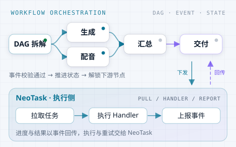

01PenPlot剧情创作规划中
把创意孵化成可拍摄的故事：梳理故事线、打磨情节节点，输出结构化剧本骨架。
PenPlot 把模糊的念头写成起承转合，是整条链最「人」的一环。剧本先按结构模板自检、自查、自修，创作取舍交给人来定，确认可用后才交给 PenShot。
↑ ↓ 选择 · Enter 打开 · Esc 清空 · 支持多关键词与模糊匹配
观星象之序，筑数字之基。
从底层调度到 AIGC 创意落地，开源项目、在线工具与行业演示，在此一揽全局、一触即达。
轻天玑居中调度：天璇管创意生产，天枢管开源引擎，天权管数字工具，玉衡沉淀内容，开阳承载行业演示，摇光试验新可能。
点主星筛选下方服务，点辅星直达项目；再点天玑回到全部。
六条主线在此汇合：一揽全局，一触即达。
一句创意先写成结构化剧本，再切成带 Prompt 与时长的分镜。两份产物都在环节内自检自修，判断不了的交给人工。
分镜之后并行：PenGen 出画面、PenDub 出声，过 PenFix 后由 PenClip 落轨成片。不合格时，素材问题回分镜生成，合成问题回 PenClip 重剪。
← 横向滑动查看完整数据流 →
点选连线上的工具，展开该环节的做法、故事与入口。
所有跨节点流转统一由 NeoFlow 编排：DAG 拆解后下发任务，NeoTask 拉取执行并回传事件，节点不直接互调；生成或配音失败时自动换模型重试。
以轻盈之技，筑云端之梦。从剧本到成片的全链路多 Agent 编排，让创意如美玉般落地：角色、场景、道具、模型沉淀为可复用资产库，跨镜头、跨集保持同一张脸，换一部剧不必从零重画。整集可一键生成，也能在任意节点人工介入改写。

创作者只接触 API 网关，业务服务完成鉴权、资产与计费；NeoFlow 拆 DAG、管调度，任务由 NeoTask 拉取执行，驱动六环推进。PenFix 挂在视频、音频与初剪之后做三道质检，不合格按根因回退；六环之间只交换 JSON，不互相调用。
规划中 设计中 开发中 测试中 已上线 已归档

把业务流程拆成有向无环图：按依赖拆解节点、把任务下发给执行侧，再监听回传事件、推进状态并解锁下游。NeoFlow 只做编排与调度，具体任务由 NeoTask 负责拉取、执行 Handler 并上报结果，两层职责分离、可独立扩展。

先用纯 Python 把后台任务跑起来，需要分布式时再切到 Redis 共享队列——不必从第一天就部署中间件。优先级插队、延迟与 Cron 定时、多 Worker 并发、失败自动重试，任务状态可落在内存、SQLite 或 Redis，并带生命周期事件、进度上报与失败任务回收，适合 AI 生成、视频转码、批量抓取这类长任务。
把创意孵化成可拍摄的故事：梳理故事线、打磨情节节点，输出结构化剧本骨架。剧本先按结构模板自检自修，创作取舍转人工，确认后再进入分镜。
把剧本拆成逐镜可投产的分场脚本，保持人物、场景与运镜一致，直接输出适配主流视频模型的提示词。分镜先自检自修，判断不了的转人工调整。
承接分镜表驱动视频模型产出画面，是整条链上算力最密集、也最接近成品的一环：每个 shot 在这里被生成、渲染，被赋予光影与运动。
负责视频的听觉层：配音、音效与背景音乐对齐视频时间线，确保每句台词落在该落的画面上，每个音效踩在该踩的节点上。
把视频片段与同步音频按叙事节奏组装成片，处理转场、节奏、时长与镜头顺序，输出初版时间线交由 PenFix 终审。
在视频、音频与初剪后各设一道质检：画面一致性、音画同步、内容合规与技术指标。Gen/Dub 不合格回分镜；Clip 终审按根因回 PenClip 重剪或回 Gen/Dub 重生成。
浏览器端在线工具箱：图片压缩与格式转换、视频转 GIF、JSON 格式化、Base64 / URL 编解码、二维码、时间戳与加解密等处理全部在本地完成，文件不离开设备，打开即用、无需注册。
定时提醒拒绝久坐：自定义工作时段与 10–300 分钟提醒频率，到点弹框置顶，可开启强制锁屏倒计时，配合桌面通知与声音提示。每日打卡、连续天数与本周完成率自动统计，Web 与桌面三端可用。
基于 Spring Data JPA 的模块化增强工具包：简化 CRUD 与批量读写，封装 Criteria 动态查询、Entity-VO 转换与分页响应，支持 HQL / SQL 扩展与自动装配，starter 一键引入、模块按需选用。
AI、Python 与系统架构的第一手记录：RAG 与向量检索实测、Agent 与 AIGC 落地细节、热门框架源码解析、项目中的架构演进与选型取舍，把踩过的坑沉淀为可复用的方法与结论。
面向城市运行管理的 IOT 演示平台：以物联设备台账与实时数据为基础，把数字城管、综合指挥、决策分析、智慧街面、环卫、市政、排水、照明、停车等 13 个模块汇聚到同一张态势图，支撑多部门协同调度与可视化决策。
覆盖安检作业、集中判图、复检开包、处置交接与通行核验的一体化演示：安检机、安检门、毫米波门、人证对比与探测设备统一接入，人脸识别辅助通行管理，并以告警中心、维保工单、排班与绩效考核支撑日常运营。
面向物流企业的运输管理演示系统：订单受理、在途跟踪、异常处理与费用结算在同一条流程内闭环，配套运力与车辆调度、按角色划分的数据权限，以及运输与经营指标的实时看板。
面向跨境与国内电商分销企业的静态演示 ERP：销售、采购、库存、财务四条主线一体化贯通，单据从创建到审核全流程可操作，用来展示订单履约、库存周转与成本核算在同一数据模型下的联动。
角色、道具、场景、短剧与 LoRA 模型的一体化创作、运行与资产管理演示：从发现广场浏览公开作品，到创作台内完成生成、调参与资产沉淀，用于验证轻量 AIGC 创作场景与数字资产的复用路径。
没有匹配的服务
换个关键词，或清空搜索查看全部服务